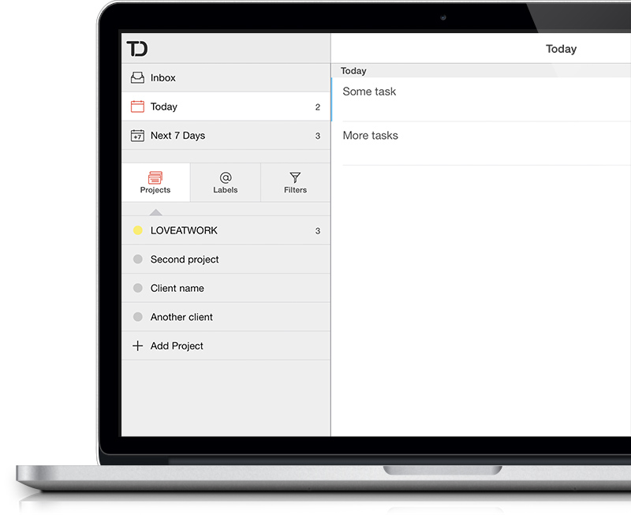

Guide till bilden av Bohuslän!
Samarbete mellan Quattroporte i Stockholm, Love at work och Märkvärdig i Luleå stärker bilden av Bohuslän.
Bohusläns mjuka klippor, den saltstänkta livsstilen med människor som kan umgås med havet och alla magiskt goda skaldjur. Tillsammans med strategi- och trendforskningsbyrån Quattroporte, ska Love at work och Huvudkontoret-kollegorna på Märkvärdig under hösten/vintern vara med och utveckla en pedagogisk guide för att hjälpa besöksnäringen i Västsverige att förstärka bilden av Bohuslän. Uppdragsgivare är Västsvenska Turistrådet och jobbet handlar om att tolka och omsätta Bohusläns befintliga varumärkesplattform till konkreta verktyg för produktutveckling och erbjudanden. Genom ett antal kreativa workshops med beslutsfattare och representanter från besöksnäringen i Bohuslän, ska vi mejsla fram konkret vägledning för långsiktig utveckling av besöksnäringen på destinationen.
Målet är att hitta just det där unika som säkerställer ett levande Bohuslän året runt – och nå de högt ställda målen om en fördubbling av omsättningen till 2020.
Samverkan där olika kompetenser kompletterar varandra
Det är Ylva på Quattroporte och vi på Love at work som leder arbetet med konceptworkshops och utvecklar det strategiska innehållet i guiden medan Lisa på Märkvärdig ansvarar för formgivning och utveckling av riktlinjer för bildtonalitet etc.
Bohusläns mjuka klippor, den saltstänkta livsstilen med människor som kan umgås med havet och alla magiskt goda skaldjur. Tillsammans med strategi- och trendforskningsbyrån Quattroporte, ska Love at work och Huvudkontoret-kollegorna på Märkvärdig under hösten/vintern vara med och utveckla en pedagogisk guide för att hjälpa besöksnäringen i Västsverige att förstärka bilden av Bohuslän. Uppdragsgivare är Västsvenska Turistrådet och jobbet handlar om att tolka och omsätta Bohusläns befintliga varumärkesplattform till konkreta verktyg för produktutveckling och erbjudanden. Genom ett antal kreativa workshops med beslutsfattare och representanter från besöksnäringen i Bohuslän, ska vi mejsla fram konkret vägledning för långsiktig utveckling av besöksnäringen på destinationen. Uppdragsgivare är Västsvenska Turistrådet och jobbet handlar om att tolka och omsätta Bohusläns befintliga varumärkesplattform till konkreta verktyg för produktutveckling och erbjudanden. Genom ett antal kreativa workshops med beslutsfattare och representanter från besöksnäringen i Bohuslän, ska vi mejsla fram konkret vägledning för långsiktig utveckling av besöksnäringen på destinationen.
Här kommer en mellanrubrik också. Det är viktigt.
Det är Ylva på Quattroporte och vi på Love at work som leder arbetet med konceptworkshops och utvecklar det strategiska innehållet i guiden medan Lisa på Märkvärdig ansvarar för formgivning och utveckling av riktlinjer för bildtonalitet etc. Bohusläns mjuka klippor, den saltstänkta livsstilen med människor som kan umgås med havet och alla magiskt goda skaldjur. Tillsammans med strategi- och trendforskningsbyrån Quattroporte, ska Love at work och Huvudkontoret-kollegorna på Märkvärdig under hösten/vintern vara med och utveckla en pedagogisk guide för att hjälpa besöksnäringen i Västsverige att förstärka bilden av Bohuslän. Uppdragsgivare är Västsvenska Turistrådet och jobbet handlar om att tolka och omsätta Bohusläns befintliga varumärkesplattform till konkreta verktyg för produktutveckling och erbjudanden. Genom ett antal kreativa workshops med beslutsfattare och representanter från besöksnäringen i Bohuslän, ska vi mejsla fram konkret vägledning för långsiktig utveckling av besöksnäringen på destinationen. Uppdragsgivare är Västsvenska Turistrådet och jobbet handlar om att tolka och omsätta Bohusläns befintliga varumärkesplattform till konkreta verktyg för produktutveckling och erbjudanden. Genom ett antal kreativa workshops med beslutsfattare och representanter från besöksnäringen i Bohuslän, ska vi mejsla fram konkret vägledning för långsiktig utveckling av besöksnäringen på destinationen.